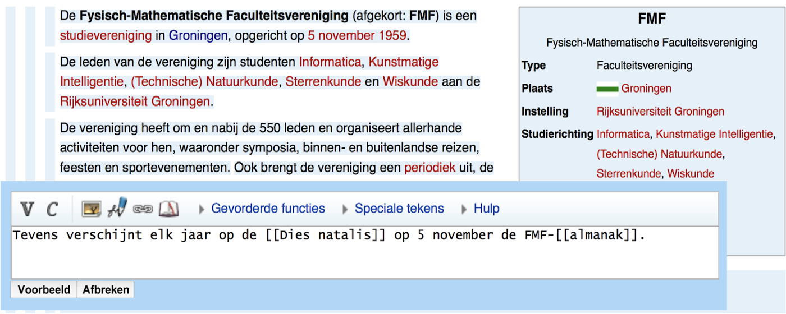

Experienced computer scientist & leader with a broad range of interests.
Implementing impactful ideas. Fan of animal slippers and isochrones.
Goals 1. do good 2. make stuff 3. have fun. Expert skills Rust, C/C++, JS, Python (and more), high-perf algorithms, architecture of interactive software, small team management, processes/culture for high quality, rapid prototyping, modeling, WebAssembly, visualiztion, compilers, mentoring. Solid skills Shaders/GPU, cloud/data architecture, constraint satisfaction, product management, customer interviews, recruiting/hiring, company founding (twice), fundraising, UI design, public speaking. Dabbled in embedded systems, computer vision, projector-camera systems, programming competitions (high school, college), teaching kids, security research, hardware engineering (CAD/CAM, mill, lathe, 3d printing, laser cutting, glass).
21 languages of production code,
22 years of programming experience,
25 wine glasses used in a project for MTV.
Please find an interactive version of this document online at janpaulposma.nl/cv.
2022-
Sabattical
Playing with hardware engineering, hack projects, angel investing, startup advising, etc.
2021-2022
Zaplib (cofounder / CTO)
Speeding up heavy web applications with Rust and WebAssembly. Incubated at Cruise, then started company and raised from top devtools investors. Managed team of 3 eng, worked with several pilot customers. Lots of Rust, low-level JS, shaders/GPU programming, custom threading, custom memory management, custom linking of native app against Chromium/V8.
2018-2020
Cruise (tech lead / L7)
Tech lead on our open source debugging tool Webviz (later spun off into a startup: Foxglove). Low-level JS, C++, WebAssembly, shaders/GPU programming, WebSockets, high-throughput data pipelines, testing infra, video generation cloud tooling, scripting APIs. Led team of 8 engineers, coordinated with 10+ teams within the company. Also cross-company hiring ("bar raiser"), some work on behavior/manoeuver planning and vehicle platform software (C++).
2016-2018
Remix (tech lead / eng mgr)
Tech lead and engineering manager on scheduling product. JS, Python, Ruby, C++, constraint satisfaction algorithms (e.g. integer linear programming), realtime models, geodata pipeline, elastic cloud compute, external integrations, highly interactive UIs. Led technical team of 8-10; 4 direct reports.
2021
Zipline
Medical drones
2015-2016
Brigade
Political discussion platform
2013-2015
Versal
Interactive courses
2012-2014
Factlink
Web annotation and factchecking
2011
Wikimedia Foundation
Wikipedia
2009-2010
WorldTicketShop
Concert and sports tickets
2009
Cantouch
Big multitouch tables
2008-2009
Triati
Cofounded; CMSes and tooling for SEO
2007-2009
Audivididici
Language learning tool
2004-2011
JPP Solutions
My webapp consulting company
2011-2012
MSc in Computer Science, Oxford
Thesis project was a programming course aimed at making the first two hours of learning programming as incredible as possible. Courses in multithreaded database design (C++), logic programming, machine learning, and more. Got a scholarship. Some programming competitions. Lots of C++ and JS.

2008-2011
BSc in Computer Science (cum laude), Groningen
Final project: better editing UI for Wikipedia (9.5/10 grade). Courses in algorithms, computer graphics, engineering management (led student team for IKEA), AI/ML, signal processing, compilers, correctness proofs, etc. Minor in math: group theory, cryptography, complex analysis, numeric methods. Some programming competitions (won gold in one). Lots of Java and C++. Some Matlab and Magma.
2002-2008
Willem Lodewijk Gymnasium, Groningen
Secondary education / high school. Lots of programming and circuit design on the side. Final project: custom designed circuit board and software for rendering images inside a bike wheel, using the "persistence of vision" effect. Maintained the school website. Contracted for various companies on the side. Built a language learning tool with a teacher. Competed in a robotics competition (and won once). Competed in national informatics olympiad. Taught electronics and programming to kids at local youth centers. Lots of C (PIC microcontroller), C++, PHP, and even Visual Basic.
I’ve written production code in 21 languages,
been programming for 22 years,
and once used 25 wine glasses in a project for MTV.
Please find an interactive version of this document online at janpaulposma.nl/cv.